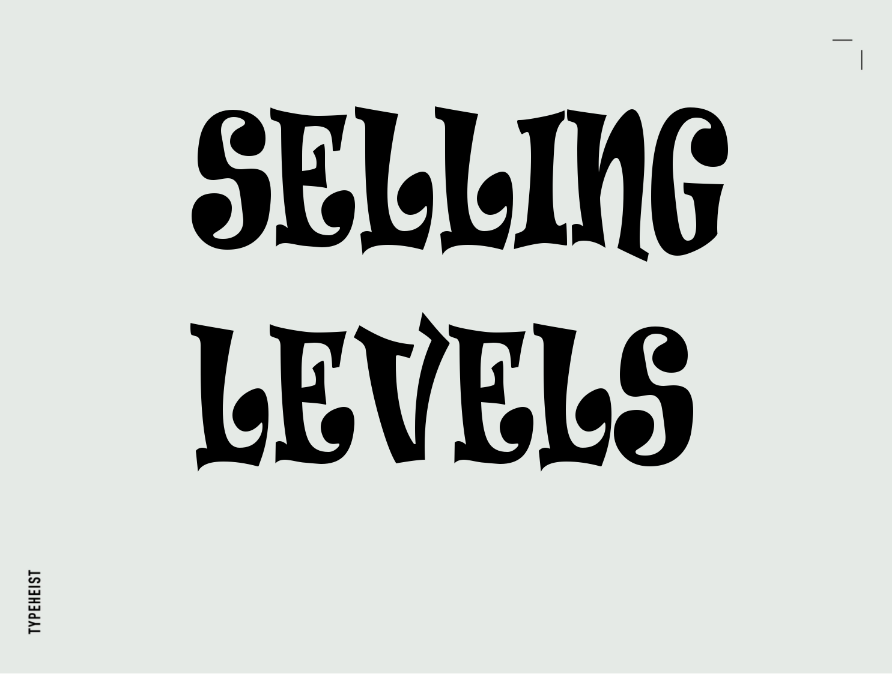
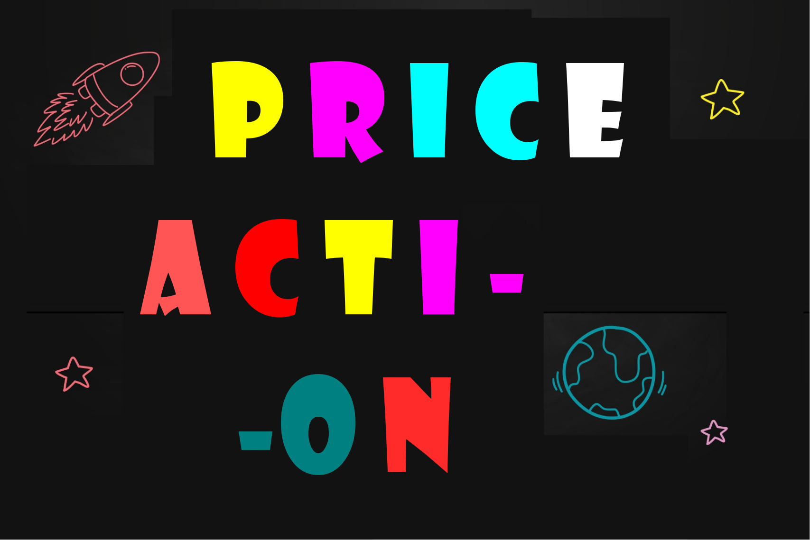

Trading Psychology: A Non-Cynical Primer (trading's affected by psychology)
While it's obvious I have lost most of the blogging bug over time, I still enjoy getting things up here every rare once and a while. And while there are innumerable topics to discuss in this business, the more compelling ones tend to stem from a broader understanding of what we're interacting with in the first place. Interpretations of any market are often nothing more than an extension of the past experiences (or lack of) of the observer himself. And while we want look at any market through lenses which allow us to view them in the most complex of forms, they are, at the end of the day, relatively simple mechanisms.
So, What Is Price?
The final product of any market is price. It is the last thing to occur in a long, drawn out decision-making process, most of which is reactionary to events. These events are the work of different types of participants, behaving in many, many different ways. They could be driven by news, the actions of other participants, or anything else. Price is the surface. Imagine if we knew nothing about what's underneath our own earth's surface. And then an violent earthquake hits, or a volcano erupts, catching everyone off-guard. At one point in time, this is exactly the way things were. Without retelling the stories of Pompeii, etc., we all know what happened.
Here are some of the points mentions previously:
- Trade Execution / Entry
- Trade Management
- Equity Curve Swings & Streaks
- Sizing
- Entry Checklists
- Framework
We can make structures/patterns out of price, and this is why I view price action as simply that: structural. But like the earth's surface, it gives us plenty of clues in terms of what's going on underneath.
Major Features
- Position Luxury: You may not be in a position to even attempt to catch the volatile downside move. By definition, these moves are caused by (or at the very least exacerbated by) liquidation cascades. This entails speculators getting liquidated en masse and others trying to avoid that same outcome by reducing their positions and/or adding collateral. Having cash and no positions to babysit is a luxury.
- Margins: Your of error in estimating when the selling will stop tend be very large. Your idea to buy could be ‘correct’ and you still might have to eat a 10%–20% move against you at the extremes.
- Liquidity evaporates: These one-sided moves are very toxic, so spreads will reflect that. Liquidity providers will also typically be quoting smaller sizes. Colloquially, this makes for ‘thin’ order books i.e. market order fill prices will be worse and the price impact of market orders will be much higher.
- Market Conditions:It’s unnecessary. As we’ll discuss when identifying other forms of capitulation, buying the bottom of an outsized move isn’t a prerequisite for great returns. Although there are much better arguments to illustrate this point, consider the following: nobody’s bull market ‘flex’ (returns-wise) is buying the Bitcoin or Ethereum bottom.
So, we’ve effectively dealt with one form of capitulation. In essence, extreme downside volatility and all the blow-ups that come with it. Easy in hindsight, generally much more difficult in practice, especially if you’re stepping in front of it as opposed to waiting for the screams to end.
Assumptions Made In Hindsight Pose Danger for Real-Time
1. Order Book
Accumulation and distribution. What are they doing, essentially? Telling us a direction. Like price patterns, there's simply no way 100% positive way to determine if a range is accumulating or distributing with price action until a subsequent move has occurred. The same goes with supply and demand (essentially the same thing). While they serve their use in hindsight, it's hard to stress how important this is to understand
The elegant cursive style and elaborate flourishes make this font perfect for tasteful design projects. Think wedding invitations, luxury branding, and greetings cards.
Price: The subscription pack for this Exchange is about ($14.50/month) for personal and commercial use.
2. Selling Levels
Directional forecasting just refers picking a direction, up or down, for any given x period. This period is usually determined by length in price, rather than time, or any other measure. As price is hitting the brakes, this is what I've viewed as just raw price action's biggest strength: determining what's next based on range-based structures.
Price: Included a free month subscription of trading view account and orders
3. Price Action
Price action is easy to identify, and I think that's part of the attraction to it. I could teach a complete novice how to find a support and resistance level in a few hours and that very night, they're doing it. Find a wedge, find a head and shoulders, etc. But there is a reason most people cannot trade these patterns, also stated above.
Price: It's absolutely FREE!; Get it with every paid subscription you make up to March 21, 2024
4. Support & Resistance

Knowing where a high volume node exists (typically circa the price range center) has its value because nothing stops price more than a massive concentration of volumes. Knowing where a smaller concentration is at the top of the range following a breakout is important because this is typically the last-chance retest before prices make their move, on an expansion.
And so prices (and profile) can tell us these things. But as far as direction goes, we are in the business of reacting. See A, do B, etc. I have always though blind price forecasting is a bit useless for this reason.
Price: Free for commercial use
5. Risk Management
Price action is easy to identify, and I think that's part of the attraction to it. I could teach a complete novice how to find a support and resistance level in a few hours and that very night, they're doing it. Find a wedge, find a head and shoulders, etc. But there is a reason most people cannot trade these patterns, also stated above.